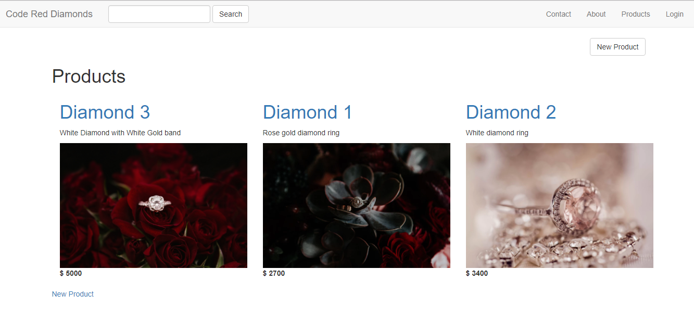

In this project I created my first production ready E-commerce app using Ruby on Rails. Some of the things that went well for me in this project were the core building principles. Many building blocks to a Ruby web app are intuitively built into the framework. The design aspect came naturally to me as well, due to the fact that it was much like building a website with the html, css, jQuery, and javascript pages. Since one of my interests are entrepreneurship it was really exciting and fun for to me to create a tool for a business owner to sell a product online!
Because this was my first attempt at building an e-commerce app I ran into many errors and my application was constantly breaking. In order to resolve the issues I had to learn where to look for errors, how to read them, and what steps to take to fix the issues. At first, it was frustrating, but then I got in the habit of researching the errors, trying to solve them alone, and then collaborating with my tutor if I got stuck. The more practice and research I did, the easier this process became until it was no longer frustrating, but actually kind of fun. I was learning new concepts, such as the MVC model, that I had to take more time to research in order to understand.
During this project I was able to develop my own approach to problem-solving in order to successfully develop my app. My first step was to define the goal. If I encountered an error my next step was to identify the problem causing the error by reading the logs, looking at the developer tools, or reading the error messages on the local host. Then I would research the problem online and try different troubleshooting methods to fix it. If I still could not find the answer I would talk to my mentor and peers for guidance. After resolving an issue I would practice the action again to be sure I learned how to avoid the error in the future.
After a lot of learning, researching, and practicing my new skills the end product was a beautifully designed and fully functioning web app where users could purchase products online!
In the future I would invest more time into mapping out my final product and practice more frequently.
code red diamonds
